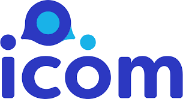

Confira as perguntas mais frequentes sobre o ICOM
Para contratar o ICOM, entre em contato com nosso time pelo telefone (11) 2227-3904 e agende uma demonstração.Entre e contato
Sim, pode. Neste caso, podemos fazer uma conexão com o call center, permitindo ao surdo ligar diretamente para a empresa. Para saber qual seu pacote ideal clique aqui
Sim, pode. Neste caso, podemos fazer uma conexão com o call center, permitindo ao surdo ligar diretamente para a empresa. Para saber qual seu pacote ideal clique aqui
Não. O ICOM é um serviço de disponibilidade, ou seja, nossos intérpretes estarão sempre disponíveis para atender sua empresa. Por isso, fechamos pacotes específicos para cada organização, evitando o desperdício. Para saber qual seu pacote ideal clique aqui